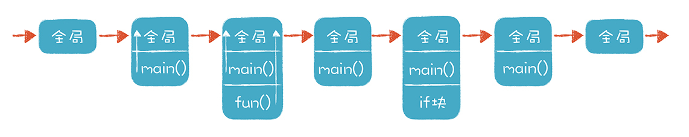

- 00 开篇词 为什么你要学习编译原理？.md.html
- 01 理解代码：编译器的前端技术.md.html
- 02 正则文法和有限自动机：纯手工打造词法分析器.md.html
- 03 语法分析（一）：纯手工打造公式计算器.md.html
- 04 语法分析（二）：解决二元表达式中的难点.md.html
- 05 语法分析（三）：实现一门简单的脚本语言.md.html
- 06 编译器前端工具（一）：用Antlr生成词法、语法分析器.md.html
- 07 编译器前端工具（二）：用Antlr重构脚本语言.md.html
- 08 作用域和生存期：实现块作用域和函数.md.html
- 09 面向对象：实现数据和方法的封装.md.html
- 10 闭包： 理解了原理，它就不反直觉了.md.html
- 11 语义分析（上）：如何建立一个完善的类型系统？.md.html
- 12 语义分析（下）：如何做上下文相关情况的处理？.md.html
- 13 继承和多态：面向对象运行期的动态特性.md.html
- 14 前端技术应用（一）：如何透明地支持数据库分库分表？.md.html
- 15 前端技术应用（二）：如何设计一个报表工具？.md.html
- 16 NFA和DFA：如何自己实现一个正则表达式工具？.md.html
- 17 First和Follow集合：用LL算法推演一个实例.md.html
- 18 移进和规约：用LR算法推演一个实例.md.html
- 19 案例总结与热点问题答疑：对于左递归的语法，为什么我的推导不是左递归的？.md.html
- 20 高效运行：编译器的后端技术.md.html
- 21 运行时机制：突破现象看本质，透过语法看运行时.md.html
- 22 生成汇编代码（一）：汇编语言其实不难学.md.html
- 23 生成汇编代码（二）：把脚本编译成可执行文件.md.html
- 24 中间代码：兼容不同的语言和硬件.md.html
- 25 后端技术的重用：LLVM不仅仅让你高效.md.html
- 26 生成IR：实现静态编译的语言.md.html
- 27 代码优化：为什么你的代码比他的更高效？.md.html
- 28 数据流分析：你写的程序，它更懂.md.html
- 29 目标代码的生成和优化（一）：如何适应各种硬件架构？.md.html
- 30 目标代码的生成和优化（二）：如何适应各种硬件架构？.md.html
- 31 内存计算：对海量数据做计算，到底可以有多快？.md.html
- 32 字节码生成：为什么Spring技术很强大？.md.html
- 33 垃圾收集：能否不停下整个世界？.md.html
- 34 运行时优化：即时编译的原理和作用.md.html
- 35 案例总结与热点问题答疑：后端部分真的比前端部分难吗？.md.html
- 36 当前技术的发展趋势以及其对编译技术的影响.md.html
- 37 云编程：云计算会如何改变编程模式？.md.html
- 38 元编程：一边写程序，一边写语言.md.html
- 加餐 汇编代码编程与栈帧管理.md.html
- 用户故事 因为热爱，所以坚持.md.html
- 第二季回归 这次，我们一起实战解析真实世界的编译器.md.html
- 结束语 用程序语言，推动这个世界的演化.md.html
- 捐赠
08 作用域和生存期：实现块作用域和函数
目前，我们已经用Antlr重构了脚本解释器，有了工具的帮助，我们可以实现更高级的功能，比如函数功能、面向对象功能。当然了，在这个过程中，我们还要克服一些挑战，比如：
- 如果要实现函数功能，要升级变量管理机制；
- 引入作用域机制，来保证变量的引用指向正确的变量定义；
- 提升变量存储机制，不能只把变量和它的值简单地扔到一个HashMap里，要管理它的生存期，减少对内存的占用。
本节课，我将借实现块作用域和函数功能，带你探讨作用域和生存期及其实现机制，并升级变量管理机制。那么什么是作用域和生存期，它们的重要性又体现在哪儿呢？
“作用域”和“生存期”是计算机语言中更加基础的概念，它们可以帮你深入地理解函数、块、闭包、面向对象、静态成员、本地变量和全局变量等概念。
而且一旦你深入理解，了解作用域与生存期在编译期和运行期的机制之后，就能解决在学习过程中可能遇到的一些问题，比如：
- 闭包的机理到底是什么？
- 为什么需要栈和堆两种机制来管理内存？它们的区别又是什么？
- 一个静态的内部类和普通的内部类有什么区别？
了解上面这些内容之后，接下来，我们来具体看看什么是作用域。
作用域（Scope）
作用域是指计算机语言中变量、函数、类等起作用的范围，我们来看一个具体的例子。
下面这段代码是用C语言写的，我们在全局以及函数fun中分别声明了a和b两个变量，然后在代码里对这些变量做了赋值操作：
/*
scope.c
测试作用域。
*/
#include <stdio.h>
int a = 1;
void fun()
{
a = 2;
//b = 3; //出错，不知道b是谁
int a = 3; //允许声明一个同名的变量吗？
int b = a; //这里的a是哪个？
printf("in fun: a=%d b=%d \n", a, b);
}
int b = 4; //b的作用域从这里开始
int main(int argc, char **argv){
printf("main--1: a=%d b=%d \n", a, b);
fun();
printf("main--2: a=%d b=%d \n", a, b);
//用本地变量覆盖全局变量
int a = 5;
int b = 5;
printf("main--3: a=%d b=%d \n", a, b);
//测试块作用域
if (a > 0){
int b = 3; //允许在块里覆盖外面的变量
printf("main--4: a=%d b=%d \n", a, b);
}
else{
int b = 4; //跟if块里的b是两个不同的变量
printf("main--5: a=%d b=%d \n", a, b);
}
printf("main--6: a=%d b=%d \n", a, b);
}
这段代码编译后运行，结果是：
main--1: a=1 b=4
in fun: a=3 b=3
main--2: a=2 b=4
main--3: a=5 b=5
main--4: a=5 b=3
main--6: a=5 b=5
我们可以得出这样的规律：
- 变量的作用域有大有小，外部变量在函数内可以访问，而函数中的本地变量，只有本地才可以访问。
- 变量的作用域，从声明以后开始。
- 在函数里，我们可以声明跟外部变量相同名称的变量，这个时候就覆盖了外部变量。
下面这张图直观地显示了示例代码中各个变量的作用域：

另外，C语言里还有块作用域的概念，就是用花括号包围的语句，if和else后面就跟着这样的语句块。块作用域的特征跟函数作用域的特征相似，都可以访问外部变量，也可以用本地变量覆盖掉外部变量。
你可能会问：“其他语言也有块作用域吗？特征是一样的吗？”其实，各个语言在这方面的设计机制是不同的。比如，下面这段用Java写的代码里，我们用了一个if语句块，并且在if部分、else部分和外部分别声明了一个变量c：
/**
* Scope.java
* 测试Java的作用域
*/
public class ScopeTest{
public static void main(String args[]){
int a = 1;
int b = 2;
if (a > 0){
//int b = 3; //不允许声明与外部变量同名的变量
int c = 3;
}
else{
int c = 4; //允许声明另一个c，各有各的作用域
}
int c = 5; //这里也可以声明一个新的c
}
}
你能看到，Java的块作用域跟C语言的块作用域是不同的，它不允许块作用域里的变量覆盖外部变量。那么和C、Java写起来很像的JavaScript呢？来看一看下面这段测试JavaScript作用域的代码：
/**
* Scope.js
* 测试JavaScript的作用域
*/
var a = 5;
var b = 5;
console.log("1: a=%d b=%d", a, b);
if (a > 0) {
a = 4;
console.log("2: a=%d b=%d", a, b);
var b = 3; //看似声明了一个新变量，其实还是引用的外部变量
console.log("3: a=%d b=%d", a, b);
}
else {
var b = 4;
console.log("4: a=%d b=%d", a, b);
}
console.log("5: a=%d b=%d", a, b);
for (var b = 0; b< 2; b++){ //这里是否能声明一个新变量，用于for循环？
console.log("6-%d: a=%d b=%d",b, a, b);
}
console.log("7: a=%d b=%d", a, b);
这段代码编译后运行，结果是：
1: a=5 b=5
2: a=4 b=5
3: a=4 b=3
5: a=4 b=3
6-0: a=4 b=0
6-1: a=4 b=1
7: a=4 b=2
你可以看到，JavaScript是没有块作用域的。我们在块里和for语句试图重新定义变量b，语法上是允许的，但我们每次用到的其实是同一个变量。
对比了三种语言的作用域特征之后，你是否发现原来看上去差不多的语法，内部机理却不同？这种不同其实是语义差别的一个例子。你要注意的是，现在我们讲的很多内容都已经属于语义的范畴了，对作用域的分析就是语义分析的任务之一。
生存期（Extent）
了解了什么是作用域之后，我们再理解一下跟它紧密相关的生存期。它是变量可以访问的时间段，也就是从分配内存给它，到收回它的内存之间的时间。
在前面几个示例程序中，变量的生存期跟作用域是一致的。出了作用域，生存期也就结束了，变量所占用的内存也就被释放了。这是本地变量的标准特征，这些本地变量是用栈来管理的。
但也有一些情况，变量的生存期跟语法上的作用域不一致，比如在堆中申请的内存，退出作用域以后仍然会存在。
下面这段C语言的示例代码中，fun函数返回了一个整数的指针。出了函数以后，本地变量b就消失了，这个指针所占用的内存（&b）就收回了，其中&b是取b的地址，这个地址是指向栈里的一小块空间，因为b是栈里申请的。在这个栈里的小空间里保存了一个地址，指向在堆里申请的内存。这块内存，也就是用来实际保存数值2的空间，并没有被收回，我们必须手动使用free()函数来收回。
/*
extent.c
测试生存期。
*/
#include <stdio.h>
#include <stdlib.h>
int * fun(){
int * b = (int*)malloc(1*sizeof(int)); //在堆中申请内存
*b = 2; //给该地址赋值2
return b;
}
int main(int argc, char **argv){
int * p = fun();
*p = 3;
printf("after called fun: b=%lu *b=%d \n", (unsigned long)p, *p);
free(p);
}
类似的情况在Java里也有。Java的对象实例缺省情况下是在堆中生成的。下面的示例代码中，从一个方法中返回了对象的引用，我们可以基于这个引用继续修改对象的内容，这证明这个对象的内存并没有被释放：
/**
* Extent2.java
* 测试Java的生存期特性
*/
public class Extent2{
StringBuffer myMethod(){
StringBuffer b = new StringBuffer(); //在堆中生成对象实例
b.append("Hello ");
System.out.println(System.identityHashCode(b)); //打印内存地址
return b; //返回对象引用，本质是一个内存地址
}
public static void main(String args[]){
Extent2 extent2 = new Extent2();
StringBuffer c = extent2.myMethod(); //获得对象引用
System.out.println(c);
c.append("World!"); //修改内存中的内容
System.out.println(c);
//跟在myMethod()中打印的值相同
System.out.println(System.identityHashCode(c));
}
}
因为Java对象所采用的内存超出了申请内存时所在的作用域，所以也就没有办法自动收回。所以Java采用的是自动内存管理机制，也就是垃圾回收技术。
那么为什么说作用域和生存期是计算机语言更加基础的概念呢？其实是因为它们对应到了运行时的内存管理的基本机制。虽然各门语言设计上的特性是不同的，但在运行期的机制都很相似，比如都会用到栈和堆来做内存管理。
好了，理解了作用域和生存期的原理之后，我们就来实现一下，先来设计一下作用域机制，然后再模拟实现一个栈。
实现作用域和栈
在之前的PlayScript脚本的实现中，处理变量赋值的时候，我们简单地把变量存在一个哈希表里，用变量名去引用，就像下面这样：
public class SimpleScript {
private HashMap<String, Integer> variables = new HashMap<String, Integer>();
...
}
但如果变量存在多个作用域，这样做就不行了。这时，我们就要设计一个数据结构，区分不同变量的作用域。分析前面的代码，你可以看到作用域是一个树状的结构，比如Scope.c的作用域：
面向对象的语言不太相同，它不是一棵树，是一片树林，每个类对应一棵树，所以它也没有全局变量。在我们的playscript语言中，我们设计了下面的对象结构来表示Scope：
//编译过程中产生的变量、函数、类、块，都被称作符号
public abstract class Symbol {
//符号的名称
protected String name = null;
//所属作用域
protected Scope enclosingScope = null;
//可见性，比如public还是private
protected int visibility = 0;
//Symbol关联的AST节点
protected ParserRuleContext ctx = null;
}
//作用域
public abstract class Scope extends Symbol{
// 该Scope中的成员，包括变量、方法、类等。
protected List<Symbol> symbols = new LinkedList<Symbol>();
}
//块作用域
public class BlockScope extends Scope{
...
}
//函数作用域
public class Function extends Scope implements FunctionType{
...
}
//类作用域
public class Class extends Scope implements Type{
...
}
目前我们划分了三种作用域，分别是块作用域（Block）、函数作用域（Function）和类作用域（Class）。
我们在解释执行playscript的AST的时候，需要建立起作用域的树结构，对作用域的分析过程是语义分析的一部分。也就是说，并不是有了AST，我们马上就可以运行它，在运行之前，我们还要做语义分析，比如对作用域做分析，让每个变量都能做正确的引用，这样才能正确地执行这个程序。
解决了作用域的问题以后，再来看看如何解决生存期的问题。还是看Scope.c的代码，随着代码的执行，各个变量的生存期表现如下：
- 进入程序，全局变量逐一生效；
- 进入main函数，main函数里的变量顺序生效；
- 进入fun函数，fun函数里的变量顺序生效；
- 退出fun函数，fun函数里的变量失效；
- 进入if语句块，if语句块里的变量顺序生效；
- 退出if语句块，if语句块里的变量失效；
- 退出main函数，main函数里的变量失效；
- 退出程序，全局变量失效。
通过下面这张图，你能直观地看到运行过程中栈的变化：

代码执行时进入和退出一个个作用域的过程，可以用栈来实现。每进入一个作用域，就往栈里压入一个数据结构，这个数据结构叫做栈桢（Stack Frame）。栈桢能够保存当前作用域的所有本地变量的值，当退出这个作用域的时候，这个栈桢就被弹出，里面的变量也就失效了。
你可以看到，栈的机制能够有效地使用内存，变量超出作用域的时候，就没有用了，就可以从内存中丢弃。我在ASTEvaluator.java中，用下面的数据结构来表示栈和栈桢，其中的PlayObject通过一个HashMap来保存各个变量的值：
private Stack<StackFrame> stack = new Stack<StackFrame>();
public class StackFrame {
//该frame所对应的scope
Scope scope = null;
//enclosingScope所对应的frame
StackFrame parentFrame = null;
//实际存放变量的地方
PlayObject object = null;
}
public class PlayObject {
//成员变量
protected Map<Variable, Object> fields = new HashMap<Variable, Object>();
}
目前，我们只是在概念上模仿栈桢，当我们用Java语言实现的时候，PlayObject对象是存放在堆里的，Java的所有对象都是存放在堆里的，只有基础数据类型，比如int和对象引用是放在栈里的。虽然只是模仿，这不妨碍我们建立栈桢的概念，在后端技术部分，我们会实现真正意义上的栈桢。
要注意的是，栈的结构和Scope的树状结构是不一致的。也就是说，栈里的上一级栈桢，不一定是Scope的父节点。要访问上一级Scope中的变量数据，要顺着栈桢的parentFrame去找。我在上图中展现了这种情况，在调用fun函数的时候，栈里一共有三个栈桢：全局栈桢、main()函数栈桢和fun()函数栈桢，其中main()函数栈桢的parentFrame和fun()函数栈桢的parentFrame都是全局栈桢。
实现块作用域
目前，我们已经做好了作用域和栈，在这之后，就能实现很多功能了，比如让if语句和for循环语句使用块作用域和本地变量。以for语句为例，visit方法里首先为它生成一个栈桢，并加入到栈中，运行完毕之后，再从栈里弹出：
BlockScope scope = (BlockScope) cr.node2Scope.get(ctx); //获得Scope
StackFrame frame = new StackFrame(scope); //创建一个栈桢
pushStack(frame); //加入栈中
...
//运行完毕，弹出栈
stack.pop();
当我们在代码中需要获取某个变量的值的时候，首先在当前桢中寻找。找不到的话，就到上一级作用域对应的桢中去找：
StackFrame f = stack.peek(); //获取栈顶的桢
PlayObject valueContainer = null;
while (f != null) {
//看变量是否属于当前栈桢里
if (f.scope.containsSymbol(variable)){
valueContainer = f.object;
break;
}
//从上一级scope对应的栈桢里去找
f = f.parentFrame;
}
运行下面的测试代码，你会看到在执行完for循环以后，我们仍然可以声明另一个变量i，跟for循环中的i互不影响，这证明它们确实属于不同的作用域：
String script = "int age = 44; for(int i = 0;i<10;i++) { age = age + 2;} int i = 8;";
进一步的，我们可以实现对函数的支持。
实现函数功能
先来看一下与函数有关的语法：
//函数声明
functionDeclaration
: typeTypeOrVoid? IDENTIFIER formalParameters ('[' ']')*
functionBody
;
//函数体
functionBody
: block
| ';'
;
//类型或void
typeTypeOrVoid
: typeType
| VOID
;
//函数所有参数
formalParameters
: '(' formalParameterList? ')'
;
//参数列表
formalParameterList
: formalParameter (',' formalParameter)* (',' lastFormalParameter)?
| lastFormalParameter
;
//单个参数
formalParameter
: variableModifier* typeType variableDeclaratorId
;
//可变参数数量情况下，最后一个参数
lastFormalParameter
: variableModifier* typeType '...' variableDeclaratorId
;
//函数调用
functionCall
: IDENTIFIER '(' expressionList? ')'
| THIS '(' expressionList? ')'
| SUPER '(' expressionList? ')'
;
在函数里，我们还要考虑一个额外的因素：参数。在函数内部，参数变量跟普通的本地变量在使用时没什么不同，在运行期，它们也像本地变量一样，保存在栈桢里。
我们设计一个对象来代表函数的定义，它包括参数列表和返回值的类型：
public class Function extends Scope implements FunctionType{
// 参数
protected List<Variable> parameters = new LinkedList<Variable>();
//返回值
protected Type returnType = null;
...
}
在调用函数时，我们实际上做了三步工作：
- 建立一个栈桢；
- 计算所有参数的值，并放入栈桢；
- 执行函数声明中的函数体。
我把相关代码放在了下面，你可以看一下：
//函数声明的AST节点
FunctionDeclarationContext functionCode = (FunctionDeclarationContext) function.ctx;
//创建栈桢
functionObject = new FunctionObject(function);
StackFrame functionFrame = new StackFrame(functionObject);
// 计算实参的值
List<Object> paramValues = new LinkedList<Object>();
if (ctx.expressionList() != null) {
for (ExpressionContext exp : ctx.expressionList().expression()) {
Object value = visitExpression(exp);
if (value instanceof LValue) {
value = ((LValue) value).getValue();
}
paramValues.add(value);
}
}
//根据形参的名称，在栈桢中添加变量
if (functionCode.formalParameters().formalParameterList() != null) {
for (int i = 0; i < functionCode.formalParameters().formalParameterList().formalParameter().size(); i++) {
FormalParameterContext param = functionCode.formalParameters().formalParameterList().formalParameter(i);
LValue lValue = (LValue) visitVariableDeclaratorId(param.variableDeclaratorId());
lValue.setValue(paramValues.get(i));
}
}
// 调用方法体
rtn = visitFunctionDeclaration(functionCode);
// 运行完毕，弹出栈
stack.pop();
你可以用playscript测试一下函数执行的效果，看看参数传递和作用域的效果：
String script = "int b= 10; int myfunc(int a) {return a+b+3;} myfunc(2);";
课程小结
本节课，我带你实现了块作用域和函数，还跟你一起探究了计算机语言的两个底层概念：作用域和生存期。你要知道：
- 对作用域的分析是语义分析的一项工作。Antlr能够完成很多词法分析和语法分析的工作，但语义分析工作需要我们自己做。
- 变量的生存期涉及运行期的内存管理，也引出了栈桢和堆的概念，我会在编译器后端技术时进一步阐述。
我建议你在学习新语言的时候，先了解它在作用域和生存期上的特点，然后像示例程序那样做几个例子，借此你会更快理解语言的设计思想。比如，为什么需要命名空间这个特性？全局变量可能带来什么问题？类的静态成员与普通成员有什么区别？等等。
下一讲，我们会尝试实现面向对象特性，看看面向对象语言在语义上是怎么设计的，以及在运行期有什么特点。
一课一思
既然我强调了作用域和生存期的重要性，那么在你熟悉的语言中，有哪些特性是能用作用域和生存期的概念做更基础的解读呢？比如，面向对象的语言中，对象成员的作用域和生存期是怎样的？欢迎在留言区与大家一起交流。
最后，感谢你的阅读，如果这篇文章让你有所收获，也欢迎你将它分享给更多的朋友。
今天讲的功能照样能在playscript-java项目中找到示例代码，其中还有用playscript写的脚本，你可以多玩一玩。
© 2019 - 2023 Liangliang Lee. Powered by gin and hexo-theme-book.